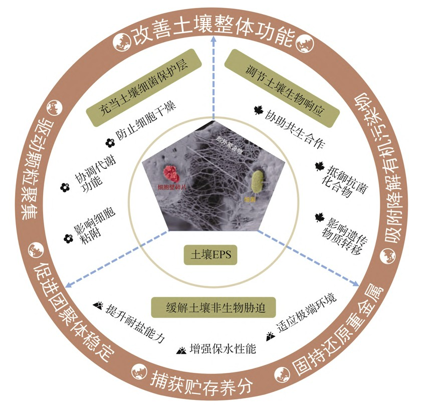

生物膜主要是由细胞和 EPS 组成，其中 EPS 约占生物膜干重的 80%。在土壤环境中，EPS在细胞与细胞、细胞与土壤之间起着桥接作用，与土壤矿物或有机质一起构成了生物膜中的胞外基质。细菌分泌的EPS为细胞提供了有效保护，如饥饿条件下提供营养，干燥过程中保持水分，抵抗有毒化学物质对细胞的毒害以及减缓土壤温度、pH和盐度急剧变化对细胞造成的损伤等。EPS 也赋予了细菌各种生态优势，包括增强菌落黏附、维持生境异质性、支持互养共栖、防御毒素损害、改变遗传物质转移以及提供胞外酶储存和营养捕获的作用。土壤中细菌 EPS 的众多优势对于维护土壤健康至关重要。例如，菌落的粘附功能可提高土壤团聚体的稳定性；胞外酶的滞留有助于土壤的代谢稳定性。
